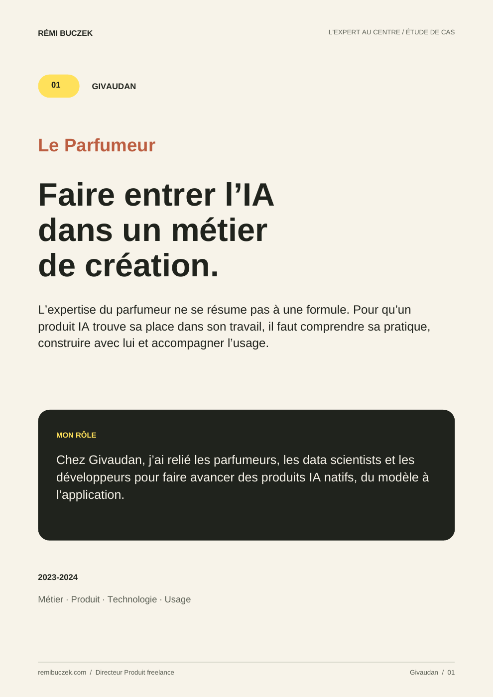
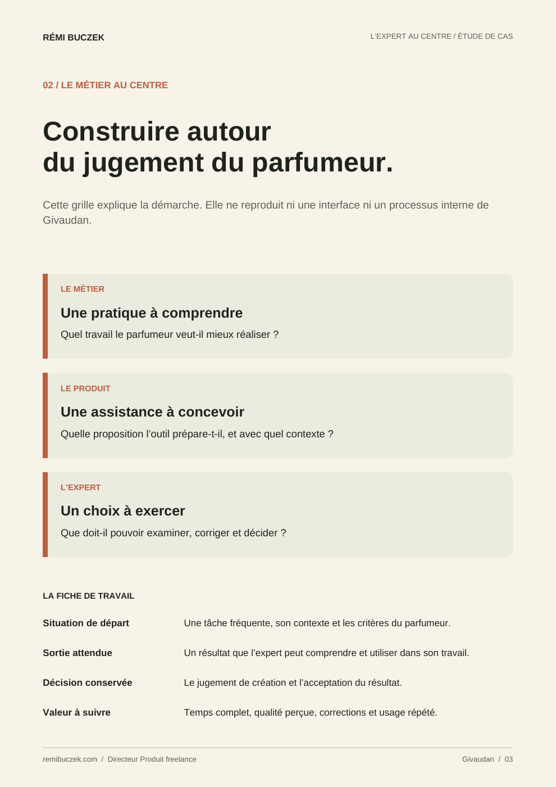

Givaudan
Le Parfumeur
Le parfumeur compose, explore, ajuste. Pour que l’IA entre dans son travail, les modèles doivent devenir des outils qui comprennent ses pratiques.
Voir un extrait

Agrandir l’extrait ↗Demande préparée dans votre messagerie.